Next: Signal-to-Noise Ratio Up: Evaluation Metrics Previous: Evaluation Metrics Contents
The main metric that is used for speaker diarization experiments is the Diarization Error Rate (DER) as described and used by NIST in the RT evaluations (NIST Fall Rich Transcription on meetings 2006 Evaluation Plan, 2006). It is measured as the fraction of time that is not attributed correctly to a speaker or to non-speech. To measure it, a script names MD-eval-v12.pl (NIST MD-eval-v21 DER evaluation script, 2006), developed by NIST, was used.
As per the definition of the task, the system hypothesis diarization output does not need to identify the speakers by name or definite ID, therefore the ID tags assigned to the speakers in both the hypothesis and the reference segmentation do not need to be the same. This is unlike the non-speech tags, which are marked as non labelled gaps between two speaker segments, and therefore do implicitly need to be identified.
The evaluation script first does an optimum one-to-one mapping of all speaker label ID between hypothesis and reference files. This allows the scoring of different ID tags between the two files. The Diarization Error Rate score is computed as
where S is the total number of speaker segments where
both reference and hypothesis files contain the same speaker/s
pair/s. It is obtained by collapsing together the hypothesis and
reference speaker turns. The terms
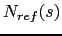 and
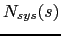
indicate the number of speaker speaking in segment  , and
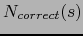 indicates the number of speakers that speak in
segment
, and
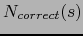 indicates the number of speakers that speak in
segment  and have been correctly matched between reference and
hypothesis. Segments labelled as non-speech are considered to
contain 0 speakers. When all speakers/non-speech in a segment are
correctly matched the error for that segment is 0.
and have been correctly matched between reference and
hypothesis. Segments labelled as non-speech are considered to
contain 0 speakers. When all speakers/non-speech in a segment are
correctly matched the error for that segment is 0.
The DER error can be decomposed into the errors coming from the different sources, which are:
| 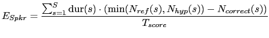 | (6.2) |
where 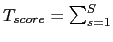 dur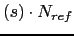 is the total scoring time, in the denominator in eq. 6.1.
| 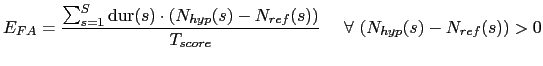 | (6.3) |
computed only over segments where the reference segment is labelled as non-speech.
| 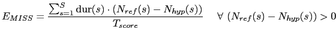 | (6.4) |
computed only over segments where the hypothesis segment is labelled as non-speech.
Given all possible errors one can rewrite equation 6.1 as
| 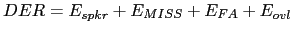 | (6.5) |
When evaluating performance, a collar around every reference speaker turn can be defined which accounts for inexactitudes in the labelling of the data. It was estimated by NIST that a 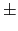250ms collar could account for all these differences. When there is people overlapping each other in the recording it is stated so in the reference file, with as many as 5 speaker turns being assigned to the same time instant. As pointed out in the denominator of eq. 6.1, the total evaluated time includes the overlaps. Errors produced when the system does not detect any or some of the multiple speakers in overlap count as missed speaker errors.
Once the performance is obtained for each individual meeting excerpt, the time weighted average is done among all meetings in a given set to obtain an overall average score. The scored time is the one used for such weighting, as it indicates the total (overlapped speaker included) time that has been evaluated in each excerpt.
user 2008-12-08